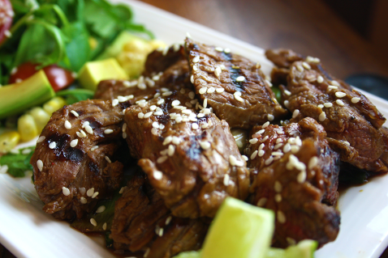

Beef Teriyaki
Nutritional Facts (per serving)
Calories 478 | Total Fat 24.2g | Saturated Fat 2.9g | Carbohydrates 27.6g | Fibre 0.9g | Protein 38.8g
Serves: 4
Ingredients
- 500g beef rump steak
- 1 salad onion
- 2 tbsp. sesame seeds, toasted
- 120ml soy sauce
- 4 tbsp. rice mirin
- 2 tbsp. agave nectar
- 1 tbsp. clear honey
Method
Step 1: Preheat the oven to Gas Mark 5 or 190°C.
Step 2: Mix the cream, tomato puree and red pesto together. Then add in the chopped red chilli.
Step 3: Place the broccoli and the salmon in the red pesto sauce in 4 individual pot pie dishes and bake in the preheated oven for 20 minutes.
Step 4: Remove from the oven and allow to cool for 5 minutes or so and serve.
Step 5: Delicious!